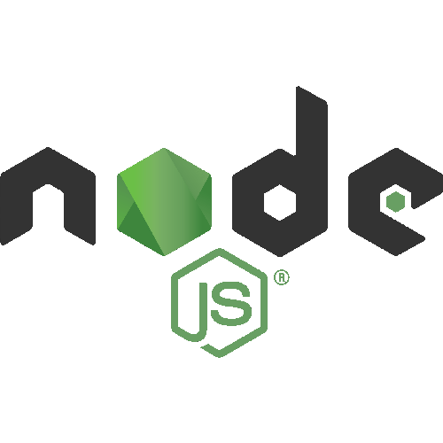
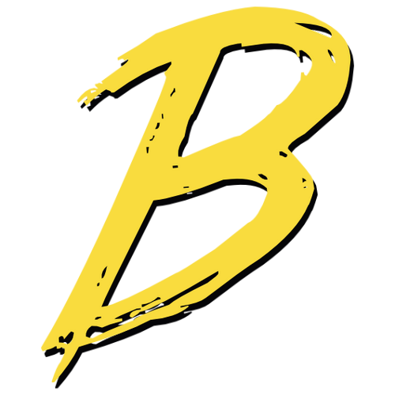
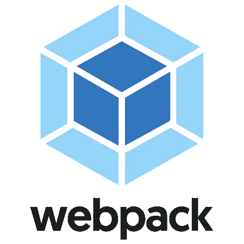
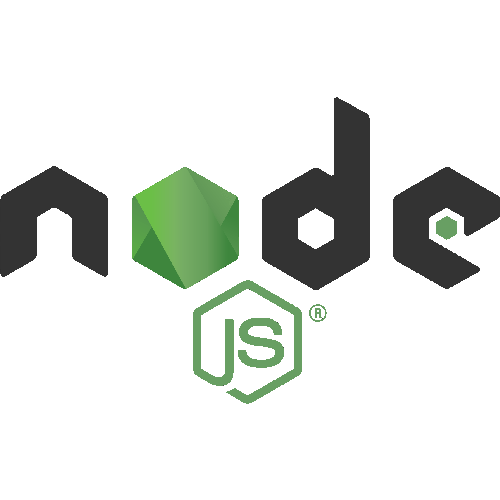
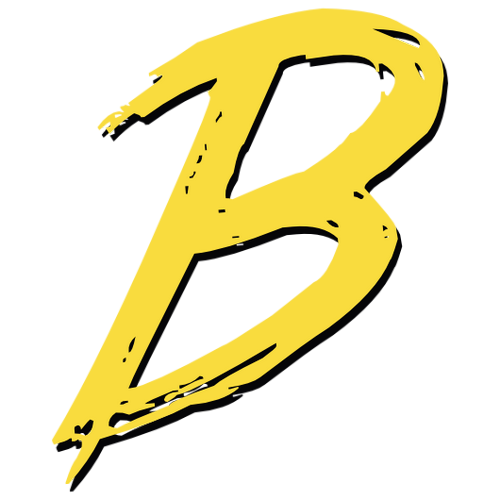
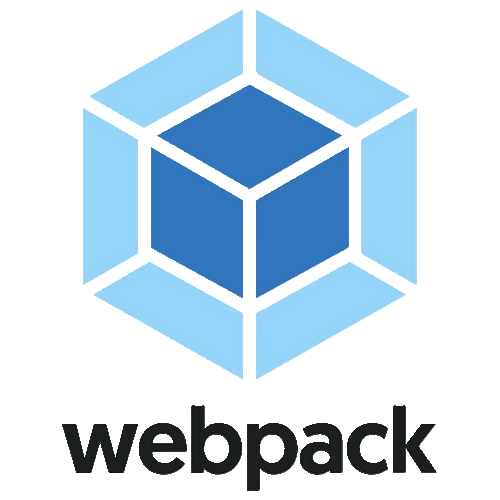

Qui suis-je ?
J'ai toujours été attiré par la technologie, c'est donc naturellement que je me suis dirigé vers un profil scientifique dès le BAC.
Après le Lycée, j'ai fait une année de BUT GEII que j'ai validée mais je me suis rendu compte que ce que je j'avais une vraie passion pour l'informatique.
Je me suis donc réorienté en BUT Informatique où je peux m'épanouir en travaillant sur des projets stimulants.
Plus j'apprends, plus j'ai envie d'apprendre, et au délà mes projets universitaires, j'ai hâte d'acquérir plus d'expérience dans le monde professionnel.
Le stage que j'ai eu la chance d'effectué à la Move Factory au coeur de l'activité de Mobivia, puissant acteur de l'industrie automobile, m'a permis d'appliquer
ce que j'ai appris à l'IUT en plus de renforcer mes compétences.
Je suis passionné par le jeu vidéo, autant par son aspect artistique que par son aspect compétitif.
Ce dernier m'a appris à me concentrer sur mes objectifs et m'a permis de développer ma concentration, ma détermination et mon sang froid.
J'aime beaucoup la musculation qui m'a rendu discipliné en forgeant autant mon corps que mon esprit.
Ensuite, quand je dis que je suis passionné par l'informatique et la technologie, il s'agit vraiment de tout ce qui touche aux ordinateurs, autant au niveau du software que du hardware.
Avec l'argent que j'ai gagné grâce à mes emplois saisonniers, j'ai pu construire mon propre pc.
C'était un projet personnel que j'avais depuis longtemps mais je n'avais pas les fonds nécessaires pour le mener à bien.
Je suis content d'avoir réussi à construire une belle machine, au delà des performances pour le jeu vidéo, ça peut me servir pour des projets futurs.
 




